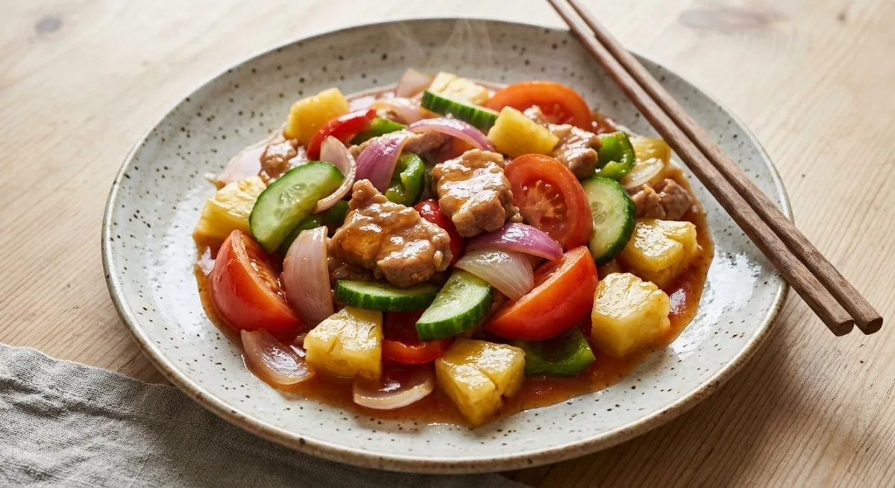

Pork with pineapple, cucumber and tomato in a glossy sweet-sour sauce — the dish Thai home cooking shares with the Chinese-style kitchen.

ผัดเปรี้ยวหวาน is the Thai home kitchen's sweet-and-sour — but the Thai sources are unusually honest that it exists in two versions. Pim (ครัวบ้านพิม) draws the line herself: the แบบโบราณ, the ancient Thai style, seasons with real vinegar, sugar and fish sauce and carries a loose, watery sauce; the modern Thai-Chinese style coats battered, deep-fried meat in a thick, dry ketchup glaze. Her recipe is the old one — and she admits she doesn't much like the new one.
The Kapook roundup of twelve versions is firmly in the modern camp: half a cup of ketchup, sugar and salt, with the note that fish sauce can replace the salt "for aroma". The Ajinomoto version is the refined shop take — ketchup plus mild chilli sauce and soy, with the pineapple specified as the sour kind: the acid comes from the fruit, not vinegar.
All three agree on the architecture: garlic golden in the wok, pork to the heat, then the fruit and vegetables — pineapple, cucumber, onion, tomato — and the seasoning last, so the vegetables hold their shape and the sauce arrives at the table glossy, not stewed.
| Thai | English | Amount |
|---|---|---|
| เนื้อหมู | Pork, sliced | 150 g |
| สับปะรดเปรี้ยว | Pineapple, the sour kind | 100 g |
| แตงกวาลูกเล็ก | Small cucumbers | 3 |
| มะเขือเทศท้อ | Large tomato | 1 |
| มะเขือเทศราชินี | Cherry tomatoes | 6 |
| หอมใหญ่ | Onion, sliced | ½ |
| พริกหยวก / พริกยักษ์แดง | Green chillies / red bell pepper | 3 / ¼ |
| กระเทียมสับ | Garlic, chopped | 1 tbsp |
| น้ำส้มสายชูแท้ | Vinegar | 1½ tbsp |
| น้ำตาลทราย | Sugar | 1⅔ tbsp |
| น้ำปลา | Fish sauce | 1–1½ tbsp |
The modern version (Kapook): same vegetables, but ½ cup ketchup + 1–2 tbsp sugar + a pinch of salt (or fish sauce) in place of the vinegar, with 3 tbsp water.
Vinegar or ketchup. Pim's ancient style is vinegar, fish sauce and sugar with a watery sauce; Kapook and Ajinomoto build on ketchup — Ajinomoto adding chilli sauce and soy. This is the dish's main fork: Thai-before-Chinese versus Chinese-after-Thai.
The sourness source. In the old style the vinegar does the souring; in the modern style the sour pineapple carries it and the ketchup deepens it. Both agree the pineapple must be the tart kind.
The meat. Kapook's roundup covers pork and chicken (200 g each); Ajinomoto specifies pork loin; Pim uses pork. No source batters the meat for the home version — that's the restaurant Chinese-style route.
Tomatoes. Pim's version is tomato-heavy — one large plus six cherry; Kapook runs one large; Ajinomoto adds it last so it barely cooks. Everyone agrees tomatoes go in late.
The sauce's body. Old style: thin and abundant, a spoonable sauce over rice. New style: thick and just coating. The texture tells you which era you're eating.
This recipe is translated from the following Thai-language sources. Where they disagree, we've said so.
1. ครัวบ้านพิม (Pim) — "ผัดเปรี้ยวหวาน" (the ancient-style recipe used here + the old-vs-new analysis) — pim.in.th
2. Kapook — "12 สูตรผัดเปรี้ยวหวาน กับข้าวหลากรสแบบไทย ๆ" (the ketchup-style roundup + chicken variant) — cooking.kapook.com
3. Ajinomoto — "วิธีทำและสูตรผัดเปรี้ยวหวาน น้ำซอสกลมกล่อม" (the measured single-serving version) — recipe.ajinomoto.co.th